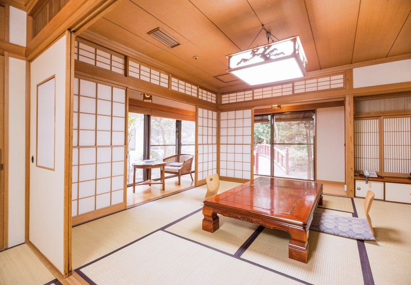

旅館のマナー
多言語対応
翻訳サイトを使用しているため、翻訳に
間違いがある可能性があります。
日本語
English
中文(未完成)
Español(未完成)
عربي(未完成)
Français(未完成)
हिंदी(未完成)
Bahasa Indonesia(未完成)
Português(未完成)
বাংলা(未完成)
旅館のマナー
1. 玄関でのマナー
・入室する際は靴を脱ぎましょう。下駄箱に入れなくても大丈夫です。
2. 客室でのマナー
・畳の縁を踏まないように歩きましょう。
・床の間に荷物を置かないようにしましょう。
3. 食事（和食）のマナー
・おしぼりは手を拭くためのものです。
・茶碗は手に持ったまま食べます。
4. 温泉入浴時のマナー
・湯船に入る前に体を洗ってください。
・湯船にタオルを入れないでください。
・髪が長い場合は結び、湯船につかないようにしましょう。
5. アメニティやドリンクについて
・小さなアメニティは持ち帰りOKです。
・冷蔵庫の中のドリンクは有料です。
まとめ

旅館のマナーを知っておくと、より気持ちよく快適に滞在できます。最低限のマナーを守り、スマートな旅行を楽しんでください。
参考にしたサイト
https://www.worldmenu.jp/articles/?p=4344